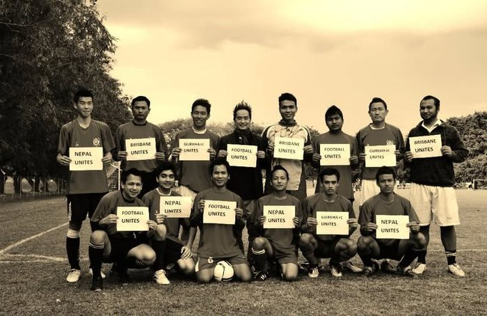

Every trophy represents more than a result — it represents the players, teamwork, commitment and moments that have shaped Gurkha FC.

2008The club is established in Brisbane as a platform for members to play soccer through promotion and participation in soccer-based activities — the same mission it carries today.
GFC wins the Machhapuchre (MFC) Cup, organised by Machhapuchre FC in Sydney — the club's first major interstate title against clubs from across Australia's Nepalese soccer community.
Interstate trophyGFC goes back-to-back on the interstate stage, winning the MFC Cup for a second time — a result also covered by SBS Nepali as a highlight for Brisbane's Nepalese community.
Interstate trophyGFC finishes 1st runner-up in the 3rd Expert GNFC Cup (organised by GoldCoast Nepalese FC) and 2nd runner-up in the Khukuri Cup (organised by Toowoomba FC).
Local achievementGFC wins the 6th Expert GFC Cup it hosts, the Khukuri Cup, the 1st Yarsha Futsal Cup and the NOVA RCSFC Cup — plus a 1st runner-up finish in the 4th Expert GNFC Cup on the Gold Coast.
Standout seasonGFC wins the 7th Expert GFC Cup it hosts and finishes runner-up in the 2nd Silverray Cup.
Standout seasonGFC lifts the Kings Cup (organised by Brengpa FC) and the Aussie Finance and Home Loans Cup (organised by Brisbane Nepalese FC), and finishes 1st runner-up in the QNFA League. The journey continues.
Standout seasonJoin us as a player, volunteer or supporter and help shape the future of our club.